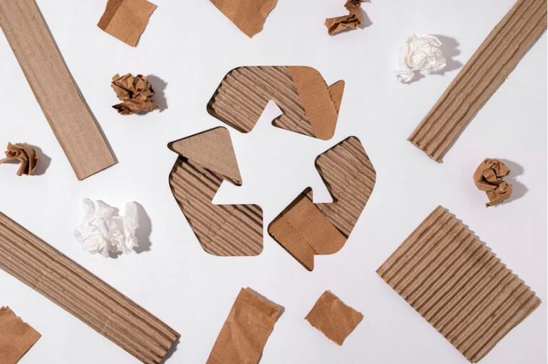
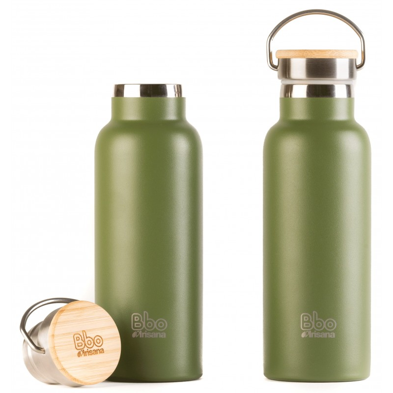
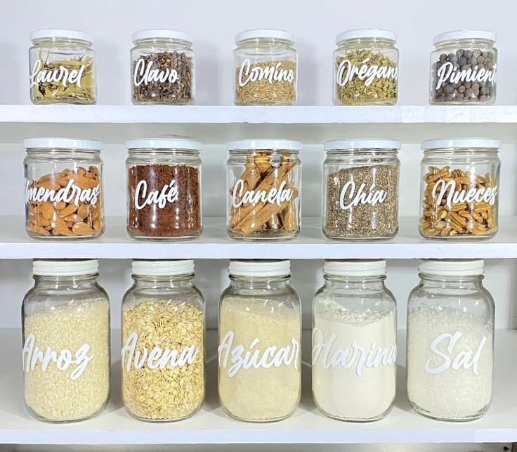
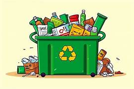
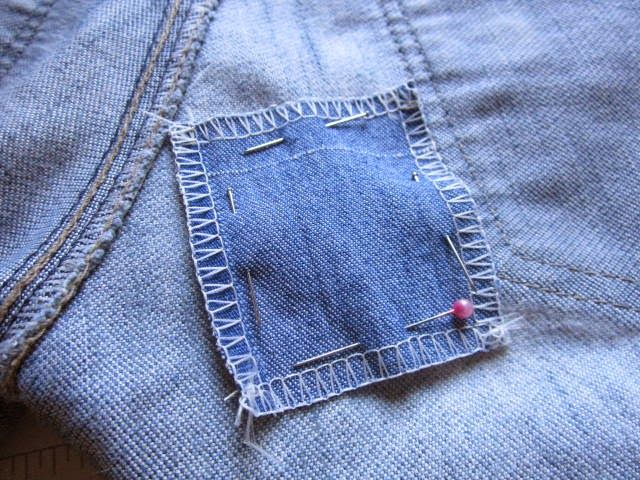
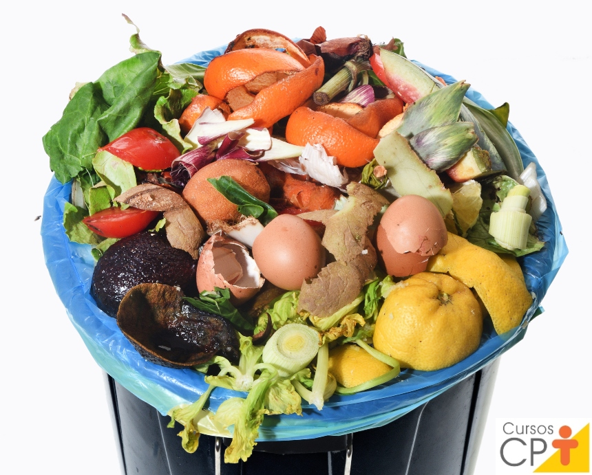
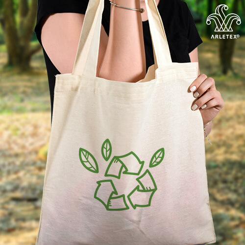

¿Qué son las 7R?
Las 3 erres nacieron en el año 2004, en una cumbre del G8, por impulso de Greenpeace y de Japón. La idea era promover la reducción de la generación de residuos y fomentar hábitos sostenibles que protejan el planeta. La evolución de la sociedad ha hecho evidente que esas 3 iniciativas no son suficientes y se han ampliado a 7: rediseñar, reducir, reutilizar, reparar, renovar, recuperar y reciclar.
Las 7R representan un conjunto de acciones responsables que podemos aplicar en nuestra vida diaria para reducir el impacto ambiental. Estas prácticas promueven el consumo consciente, el cuidado de los recursos y la reducción de residuos.
7R: Rediseñar, Reducir, Reutilizar, Reparar, Renovar, Recuperar, Reciclar. Aquí aprenderéis qué son cada una de estas acciones y como ponerlas en práctica para conseguir una economía circular y un futuro sostenible para todos.
Beneficios de las 7R en las escuelas
Cada una de ellas.
- Las 7R ayudan a minimizar la cantidad de residuos generados en la escuela, lo que reduce el impacto ambiental.
- Al reutilizar, reparar y reciclar materiales, la escuela ahorra dinero y recursos.
- Las 7R promueven una cultura de cuidado ambiental entre los estudiantes y el personal de la escuela.
- Las 7R pueden ser una fuente de inspiración para proyectos artísticos y educativos.
- La aplicación de las 7R puede ayudar a los estudiantes a desarrollar habilidades de resolución de problemas, creatividad y trabajo en equipo.
- Ecología Verde: Las 7R del reciclaje
- Khan Academy: Educación ambiental y ecología
- Prevenir
- Abrir ejemplos
- Manjón, N. (2020, 2 marzo). 7R: Rediseñar, reducir, reutilizar, reparar, renovar, recuperar y reciclar. ecologiaverde.com. https://www.ecologiaverde.com/7r-redisenar-reducir-reutilizar-reparar-renovar-recuperar-y-reciclar-2066.html
- Ecolopedia. (2024, 13 agosto). Las 7R: Rediseñar, reducir, reutilizar y 10 ejemplos de recuperar. Ecolopedia. https://ecolopedia.org/reciclaje/las-7-r/
- Ecozap. (2023, 2 mayo). Las 7 R de la economía circular: ¿Qué son y cómo aplicarlas? https://ecozap.es/economia-circular/las-7-r-de-la-economia-circular-que-son-y-como-aplicarlas/
¿Cómo se aplican las 7R en Chalchicomula de Sesma?
En nuestra comunidad se han comenzado a aplicar prácticas como el uso de bolsas reutilizables, campañas de reciclaje, talleres de compostaje y concientización en las escuelas sobre el cuidado del medio ambiente. Estos esfuerzos promueven el compromiso colectivo para proteger nuestro entorno natural.
Aunque el departamento de limpieza pública continúa con la recolección regular, cubriendo zonas como el campo deportivo "La Gloria", poco o nada se ha presentado públicamente sobre talleres comunitarios de reparación o espacios de reutilización y recuperación (envases, ropa, etc.).
Actualmente, Chalchicomula de Sesma mantiene un sistema de recolección, pero carece de las medidas necesarias para impulsar las 7 R: no se separan residuos en origen, no opera un centro de reciclaje funcional, no se promueven actividades de reutilización o reparación, y el vertedero no cumple con normativa ni genera beneficios ambientales reales.
Las 7R explicadas con ejemplos
| R | Descripción | Ejemplo | Imagen |
|---|---|---|---|
| Rediseñar | Modificar el diseño de productos para que sean sostenibles y fáciles de reciclar. | Envases de cartón reciclable en lugar de plástico. |

Diseño ecológico
|
| Reducir | Minimizar el uso de recursos y evitar productos innecesarios. | Llevar termo reutilizable en lugar de botellas desechables. |

Consumo consciente
|
| Reutilizar | Volver a utilizar materiales o productos para alargar su vida útil. | Usar frascos como recipientes para cocina. |

Objetos reutilizados
|
| Reciclar | Separar y tratar residuos para convertirlos en nuevos productos. | Separar papel, vidrio, plástico y metales. |

Reciclaje urbano
|
| Reparar | Arreglar objetos dañados para seguir usándolos. | Remendar ropa rota o arreglar electrodomésticos. |

Reparación doméstica
|
| Recuperar | Recuperar materiales o energía que aún se pueden aprovechar. | Compostar los residuos orgánicos del hogar. |

Compostaje casero
|
| Rechazar | Negarse a productos contaminantes o que no se pueden reutilizar. | Rechazar bolsas plásticas y usar de tela. |

Alternativas sostenibles
|
Video educativo sobre las 7R
Audio informativo
Más información sobre las 7R
Cartel